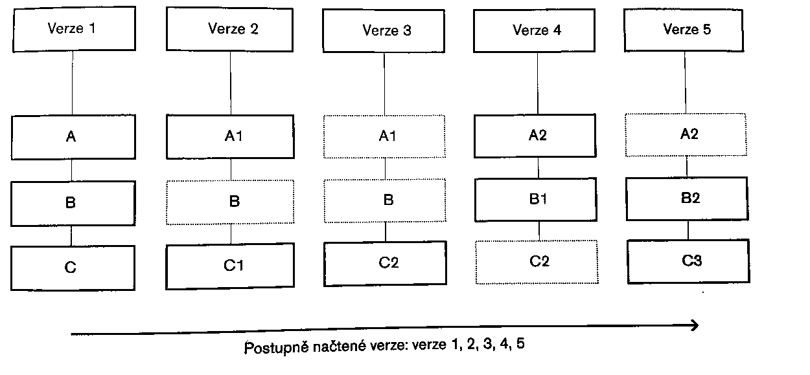
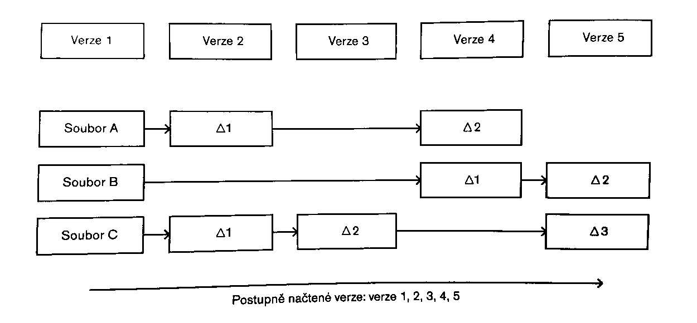

GIT GUT
Verzovací systém GIT
Úkoly
- test na trojuhelník
- vstup 3 čísla
- test na pravoúhlý trojuhelník
- vstup 3 čísla
- využijte co už máte
- kalkulačka
- vstup 2 čísla a znak (A,B a operátor)
- výpočet kvadratické rovnice s reálnými kořeny
Úkoly - cykly
- výpočet násobení pomocí sčítání
- výpočet faktoriálu
- zjisti kolik je slov ve větě
- Až pojedu na severní pól vezmu si ...
- Když jsem já sloužil
Co je GIT?
Git is a distributed version control system designed to handle everything from small to very large projects with speed and efficiency. Git is easy to learn (hard to master) and has a tiny footprint with lightning fast performance.Jaký je GIT?
- otevřený
- distribuovaný
- rozšiřitelný
- snadno re-implementovatelný
Jak GIT používat?
- konzole
- GUI prostředí
- Git gui
- GitEye (Java)
- TortoiseGIT (windows)
- integrovaná reimplementace (JetBrains, Eclipse...)
Jak GIT funguje?
Jak GIT funguje?
GIT - větve
- umožňují práci na více verzích zároveň
- umožňují spolupráci více vývojářů

Základní příkazy
git init - založí repozitář
git clone - stáhne repozitář
git add - přidá soubory do repozitáře
git commit - zapíše změny do lokálního repozitáře
git pull - stáhne změny z externího repozitáře
git push - odešle změny do externího repozitáře
git checkout - přepne na danou verzi/větev
Úkol
- stáhněte repozitář
https://github.com/theAMD/slides.git - založte větev, jako název použijte svoje příjimení a přepněte se do této větve
- v kořenu repozitáře vytvořte soubor evaluation, do tohoto souboru zapište slovní hodnocení
- zapište změny
- zkuste změny natlačit do externího repozitáře (nemělo by jít)